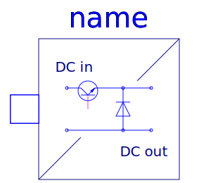

.
Modelica
.
Electrical
.
PowerConverters
.
DCDC
Information
General information about DC/DC converters can be found at the
DC/DC converter concept
Contents
Name
Description
Control
Control components for DC to DC converters

ChopperStepDown
Step down chopper
ChopperStepUp
Step up chopper
HBridge
H bridge (four quadrant converter)
Generated at 2019-01-24T09:03:13Z by
OpenModelica 1.14.0~dev-130-gefa44fb